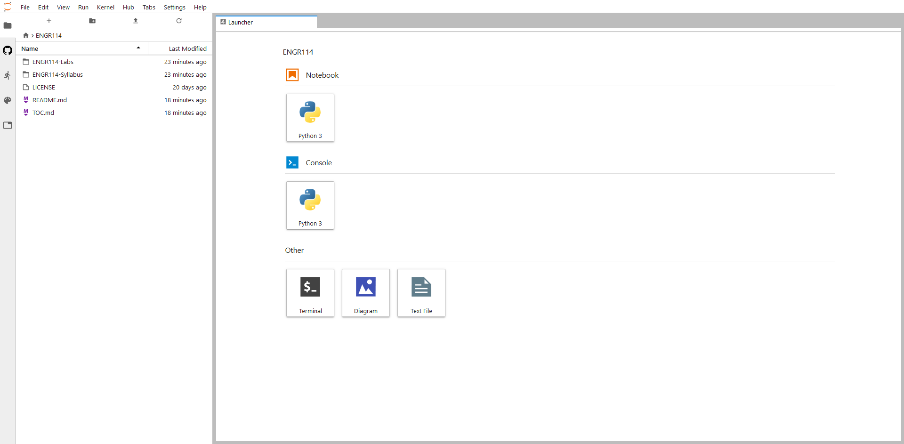

nbgitpuller default URL
In this section, we will discuss how one might configure the nbgitpuller URL from the previous section into the default URL for our JupyterHub site. This mean that any time a student goes to mydomain.org → mydomain.org/mycustomgitpullerurl
The nbgitpuller plugin pulls down a GitHub repo into each student's JupyterHub environment when students start JupyterHub by clicking on a specific link.
When users go to a custom link such as: https://mydomain.org/hub/user-redirect/git-pull?repo=GitHubUserName%2FRepoName&branch=master&app=lab users end up pulling all the files from the specified GitHub Repo into they JupyterHub folders. They see something like the following in their browser.

If we open one of the notebooks within JupyterHub, we see the same notebook that is stored on GitHub.
Add the custom link to jupyterhub_config.py
We can add this the nbgitpuller custom link to the jupyterhub_config.py file. We did this before for when we made JupyterLab the default environment.
Log into the server and shut down Jupyterhub.
$ sudo systemctl stop jupyterhub
cd to the /etc/jupyterhub/ directory and open up the jupyterhub_config.py file
$ cd /etc/jupyterhub
$ ls
jupyterhub.sqlite jupyterhub_config.py jupyterhub_cookie_secret templates
$ nano jupyterhub_config.py
Inside the jupyterhub_config.py file, modify the line c.Spawner.default_url = '/lab' to instead point to the custom nbgitpuller URL. You can build a cusom nbgitpuller URL using this app:
https://mybinder.org/v2/gh/jupyterhub/nbgitpuller/master?urlpath=apps/binder%2Flink_generator.ipynb
This produces a URL that is of the form: https://engr114.org/hub/user-redirect/git-pull?repo=ProfessorKazarinoff%2FENGR114&branch=master&app=lab. We only need part of this for the default_url. We'll keep everything after the https://engr114.org
/hub/user-redirect/git-pull?repo=ProfessorKazarinoff%2FENGR114&branch=master&app=lab
Modify jupyterhub_conf.py !!! Still does not work !!!.
In jupyterhub_config.py modify the file to include:
# /etc/jupyterhub/jupyterhub_config.py
...
# Start Users at a default nbgitpuller url.
# Users pull down from the GitHub repo for the class automatically.
c.Spawner.default_url = '/user-redirect/git-pull?repo=ProfessorKazarinoff%2FENGR114&branch=master&app=lab'
...
Save the changes and restart JupyterHub.
## Restart JupyterHub and test it out
```text
$ sudo systemctl start jupyterhub
$ sudo systemctl status jupyterhub
[Ctrl]-[c] to exit
Summary
In this section we configured JupyterHub to automatically go the the URL we setup with the nbgitpuller plugin. So when students go to domain.org they get the same files as if they went to the custom plugin URL https://mydomain.org/hub/user-redirect/git-pull?repo=GitHubUserName%2FRepoName&branch=master&app=lab